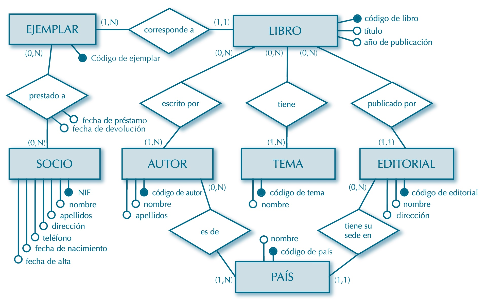
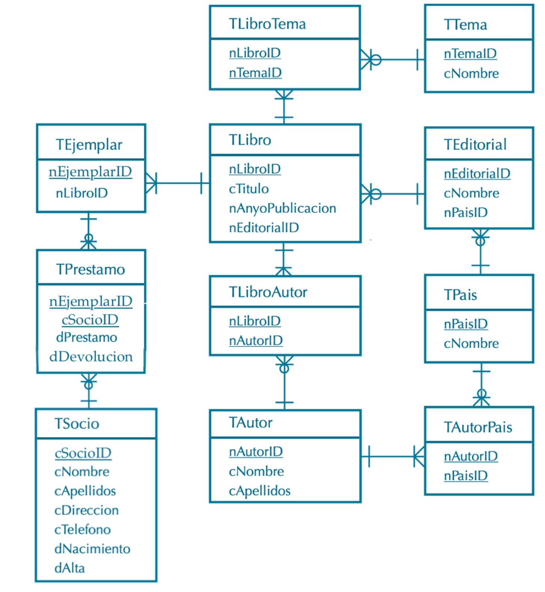

Ejemplo paso del Modelo E-R al modelo físico de datos
Se ha de definir el modelo de datos de una biblioteca con las siguientes restricciones básicas:
Cada libro registrado cuenta con varios ejemplares físicos.
Todo libro corresponde a una o varias temáticas, está escrito por uno o varios autores y
publicado por una sola editorial.
Los ejemplares se prestan a los socios. Hay que guardar la fecha de préstamo, fecha de devolución.
Es necesario almacenar la nacionalidad o nacionalidades de cada autor, así como el país
donde cada editorial tiene su sede principal.


Sin embargo, bajo el modelo físico anterior no es posible que un usuario tome a prestamo un
determinado ejemplar en más de una ocasión. Para solucionar este problema en la Tabla
TPrestamo agregamos a la clave primaria el atributo Fecha de prestamo: